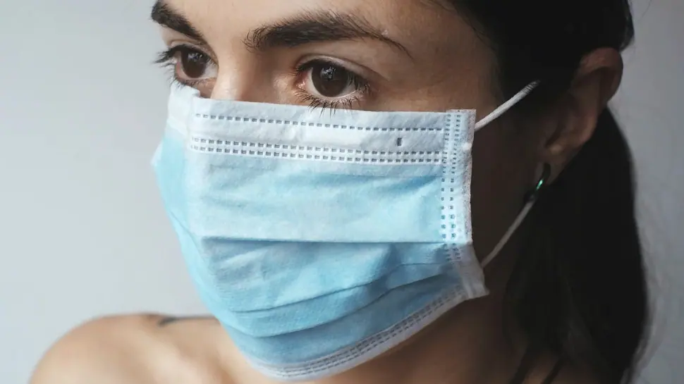
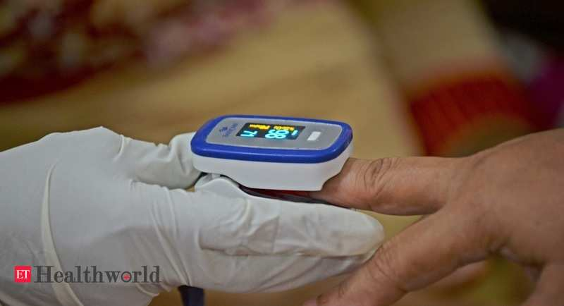
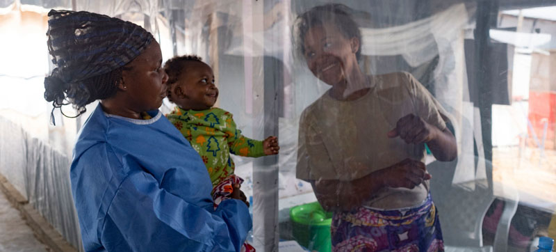
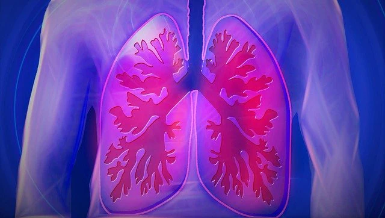
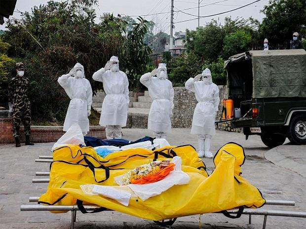

You need to enable JavaScript to run this app.
WellHealth
Home
Covid
Indian Health News Headlines
1 in 5 older adult's mental health, sleep worsened during Covid - Daijiworld.com
source: Daijiworld.com
Govt cautions people regarding COVID Vaccine registration fraud - All India Radio
source: All India Radio
New COVID-19 test can analyze more than 1,000 samples at once - Tech Explorist
source: Tech Explorist
Researchers design a 3D lung-on-a-chip model to test new therapies for COVID-19, other lung conditions - EdexLive
source: EdexLive
Morning Rituals: This Is How You Should Start Your Day For A Healthy Gut - NDTV
source: NDTV News
MDMA shows promise as severe PTSD treatment - Yahoo India News
source: Yahoo Entertainment
Safe sex: How condoms can help prevent STDs - The Indian Express
source: The Indian Express
Applying UV Light to Common Disinfectants May Reduce Toxicity, Finds Study | The Weather Channel - Articles from The Weather Channel | weather.com - The Weather Channel
source: The Weather Channel
Quarantined At Home? Find Out How You Can Claim Medical Insurance In Home Isolation - Trak.in
source: Trak.in

Wearing masks for COVID cut asthma, allergies by 65% - Zee News
source: India.com

Pulse oximeters more useful in Covid screening for older adults, new study affirms - ETHealthworld.com
source: The Times of India

Latest deadly Ebola virus outbreak in DR Congo declared over | Indiablooms - First Portal on Digital News Management - indiablooms
source: Indiablooms.com
Canadian scientists share first images of B.1.1.7 coronavirus mutation - Moneycontrol
source: Moneycontrol
Study underscores importance of mental health screenings for teens with hearing loss - Health Bollyinside - BollyInside
source: Bollyinside.com

World Asthma Day 2021: Theme this year aims to uncover misconceptions; history and significance of day - Firstpost
source: Firstpost
Dr Anthony Fauci advice to India: Clamp nationwide lockdown, go for massive vaccination drive - Oneindia
source: Oneindia.com

After sweeping India, fierce Covid-19 waves hit other developing nations - Business Standard
source: Business Standard
Amid India’s coronavirus crisis, Asia’s developing nations are all at risk - South China Morning Post
source: Post Magazine
Natco Pharma to launch Baricitinib tablets for COVID-19 treatment - BSI bureau
source: Biospectrumindia.com